Lab 9 Solution
Lab Instructor: Valeria Barra
Contents
DUE Tuesday 03-29-2016
Problem 1: Numerical Integration: Trapezoid Rule and Simpson's rule
Use Trapezoid Method and Simpson's Method to find the approximations 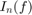 of integrals 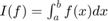, with 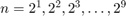, for the functions:
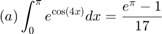
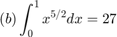
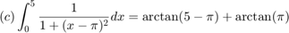
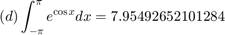
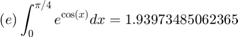
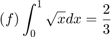
For each of the approximated integrals calculate the error from the exact value of the integral 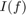, given by 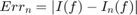
Solution:
clear all; clc; format long e % all functions handles in a cell array f = {@(x) exp(x).*cos(4.*x), @(x)(x.^(5/2)), @(x) 1./(1+(x-pi).^2), @(x) exp(cos(x)), @(x) exp(cos(x)), @(x) sqrt(x)}; % an array of lower endpoints of integration for all exercises a = [0, 0, 0, -pi, 0, 0]; % an array of upper endpoints of integration for all exercises b = [pi, 1, 5, pi, pi/4, 1]; % an array exact solutions: I = [(exp(pi) -1)/17,2/7,atan(pi - 5) + atan(pi), 7.95492652101284,1.93973485062365,2/3]; % a vector with all n's for each exercise: n = 2.^(1:9); % an array of character strings to be diplayed in the table of results Strings=['a' 'b' 'c' 'd' 'e' 'f']; % we will call the three methods Trapezoid, Simpson's and Midpoint in a % nested loop. One loop goes over each single exercise ((a) to (f)); one % for each of them goes over all the n's for i=1:length(a) fprintf('Execution of part (%s) \n',Strings(i)) fprintf(' n Trap Rule Error_n Trap Ratio_n Trap Simpson''s Rule Error_n Simps Ratio_n Simps\n') fprintf('===============================================================================================================================\n') for j = 1:length(n) Tr = Trapezoid(f{i},a(i),b(i),n(j)); S = Simpson(f{i},a(i),b(i),n(j)); ErrTrap(j)=abs(I(i)- Tr); ErrSimps(j)=abs(I(i)- S); if j<2 fprintf('%3i %15.8f %15.8f %15s %15.8f %15.8f %15s \n', n(j),Tr,ErrTrap(j),'',S,ErrSimps(j),'') else RatioTrap(j-1)=ErrTrap(j-1)/ErrTrap(j); RatioSimps(j-1)=ErrSimps(j-1)/ErrSimps(j); fprintf('%3i %15.8f %15.8f %15.8f %15.8f %15.8f %15.8f \n', n(j),Tr,ErrTrap(j),RatioTrap(j-1),S,ErrSimps(j),RatioSimps(j-1)) end end % end of each table fprintf('===============================================================================================================================\n') end
Execution of part (a) n Trap Rule Error_n Trap Ratio_n Trap Simpson's Rule Error_n Simps Ratio_n Simps =============================================================================================================================== 2 26.51633586 25.21394217 22.71507737 21.41268369 4 3.24905049 1.94665681 12.95243314 -4.50671129 5.80910498 3.68605556 8 1.62452525 0.32213156 6.04304897 1.08301683 0.21937685 26.48002697 16 1.37572252 0.07332883 4.39297270 1.29278827 0.00960541 22.83888525 32 1.32031188 0.01791819 4.09242320 1.30184167 0.00055202 17.40050791 64 1.30684789 0.00445420 4.02276262 1.30235989 0.00003380 16.33364836 128 1.30350566 0.00111197 4.00566951 1.30239158 0.00000210 16.08242503 256 1.30267158 0.00027790 4.00141606 1.30239355 0.00000013 16.02052283 512 1.30246315 0.00006947 4.00035389 1.30239368 0.00000001 16.00662328 =============================================================================================================================== Execution of part (b) n Trap Rule Error_n Trap Ratio_n Trap Simpson's Rule Error_n Simps Ratio_n Simps =============================================================================================================================== 2 0.33838835 0.05267406 0.28451780 0.00119649 4 0.29879150 0.01307721 4.02792796 0.28559255 0.00012174 9.82823468 8 0.28897474 0.00326045 4.01085576 0.28570249 0.00001180 10.31849208 16 0.28652857 0.00081428 4.00408363 0.28571318 0.00000111 10.64428802 32 0.28591778 0.00020349 4.00150493 0.28571418 0.00000010 10.85810433 64 0.28576515 0.00005087 4.00054731 0.28571428 0.00000001 11.00024432 128 0.28572700 0.00001272 4.00019730 0.28571428 0.00000000 11.09627668 256 0.28571746 0.00000318 4.00007071 0.28571429 0.00000000 11.16201052 512 0.28571508 0.00000079 4.00002524 0.28571429 0.00000000 11.20714250 =============================================================================================================================== Execution of part (c) n Trap Rule Error_n Trap Ratio_n Trap Simpson's Rule Error_n Simps Ratio_n Simps =============================================================================================================================== 2 2.16665484 1.98116662 2.62509546 2.43960723 4 2.26866764 2.08317942 0.95103024 2.30267191 2.11718368 1.15228889 8 2.33227047 2.14678224 0.97037295 2.35347141 2.16798318 0.97656832 16 2.33781288 2.15232465 0.99742492 2.33966035 2.15417213 1.00641130 32 2.33927712 2.15378890 0.99932016 2.33976520 2.15427698 0.99995133 64 2.33964394 2.15415572 0.99982972 2.33976622 2.15427799 0.99999953 128 2.33973570 2.15424747 0.99995741 2.33976628 2.15427805 0.99999997 256 2.33975864 2.15427041 0.99998935 2.33976628 2.15427806 1.00000000 512 2.33976437 2.15427614 0.99999734 2.33976628 2.15427806 1.00000000 =============================================================================================================================== Execution of part (d) n Trap Rule Error_n Trap Ratio_n Trap Simpson's Rule Error_n Simps Ratio_n Simps =============================================================================================================================== 2 9.69546157 1.74053505 12.15679720 4.20187068 4 7.98932344 0.03439692 50.60148152 7.42061073 0.53431579 7.86402112 8 7.95492777 0.00000125 27480.40488126 7.94346255 0.01146397 46.60826574 16 7.95492652 0.00000000 234879409.83333334 7.95492610 0.00000042 27476.40521271 32 7.95492652 0.00000000 1.00000000 7.95492652 0.00000000 93951762.80000000 64 7.95492652 0.00000000 1.00000000 7.95492652 0.00000000 0.83333333 128 7.95492652 0.00000000 0.60000000 7.95492652 0.00000000 1.00000000 256 7.95492652 0.00000000 1.66666667 7.95492652 0.00000000 3.00000000 512 7.95492652 0.00000000 0.28571429 7.95492652 0.00000000 0.11111111 =============================================================================================================================== Execution of part (e) n Trap Rule Error_n Trap Ratio_n Trap Simpson's Rule Error_n Simps Ratio_n Simps =============================================================================================================================== 2 1.92117917 0.01855568 1.94027033 0.00053548 4 1.93511966 0.00461519 4.02056590 1.93976649 0.00003164 16.92502346 8 1.93858251 0.00115234 4.00507489 1.93973680 0.00000195 16.23047908 16 1.93944686 0.00028799 4.00126462 1.93973497 0.00000012 16.05704615 32 1.93966286 0.00007199 4.00031590 1.93973486 0.00000001 16.01422667 64 1.93971685 0.00001800 4.00007896 1.93973485 0.00000000 16.00359065 128 1.93973035 0.00000450 4.00001974 1.93973485 0.00000000 16.00100507 256 1.93973373 0.00000112 4.00000493 1.93973485 0.00000000 16.02066811 512 1.93973457 0.00000028 4.00000118 1.93973485 0.00000000 16.06563707 =============================================================================================================================== Execution of part (f) n Trap Rule Error_n Trap Ratio_n Trap Simpson's Rule Error_n Simps Ratio_n Simps =============================================================================================================================== 2 0.60355339 0.06311328 0.63807119 0.02859548 4 0.64328305 0.02338362 2.69903783 0.65652626 0.01014040 2.81995522 8 0.65813022 0.00853645 2.73926913 0.66307928 0.00358739 2.82668222 16 0.66358120 0.00308547 2.76665974 0.66539819 0.00126848 2.82810303 32 0.66555894 0.00110773 2.78539780 0.66621818 0.00044848 2.82836905 64 0.66627081 0.00039586 2.79832156 0.66650810 0.00015856 2.82841682 128 0.66652566 0.00014101 2.80729776 0.66661061 0.00005606 2.82842530 256 0.66661655 0.00005012 2.81356482 0.66664685 0.00001982 2.82842680 512 0.66664888 0.00001779 2.81795678 0.66665966 0.00000701 2.82842707 ===============================================================================================================================
Conclusions:
Problem 2
Solution: To solve this problem, we need to test monomial functions 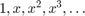 on a general interval [a,b]=[x,x+4h], where both x and h are symbolic variables. Note that we apply to all integration rules the same number of points 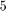, since Boole's rule needs at least this number of nodes. But the results would be unchanged, even if we tested Trapezoid and Simpson's rules with fewer nodes.
n = 5; syms x h; monomials = sym(zeros(1, n)); for k=0:n+1 monomials(k+1) = sym(x^k); Real(k+1)= collect((( x + 4*h)^(k+1) - x^(k+1) )/(k+1),h); end for k=0:n+1 T=collect(TrapezoidSym(monomials(k+1),x,x+4*h,h,n),h); testT=isequal(T,Real(k+1)); if (testT==0) fprintf('The order of precision for Trapezoid is is %d\n',k-1) break end end for k=0:n+1 S=collect(SimpsonSym(monomials(k+1),x,x+4*h,h,n),h); testS=isequal(S,Real(k+1)); if (testS==0) fprintf('The order of precision for Simpson is is %d\n',k-1) break end end for k=0:n+1 B=collect(Boole(monomials(k+1),x,x+4*h,h,n),h); testB=isequal(B,Real(k+1)); if (testB==0) fprintf('The order of precision for Boole''s is %d\n',k-1) break end end
The order of precision for Trapezoid is is 1 The order of precision for Simpson is is 3 The order of precision for Boole's is 5